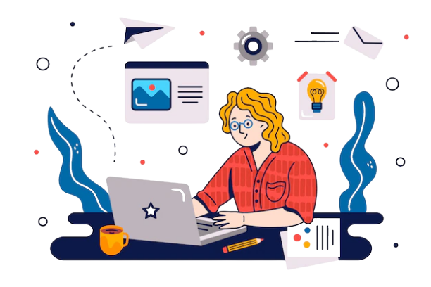

March 8th is more than a date on the calendar. It is a symbol of resilience, strength, and the unbreakable will of women around the world. It is a reminder that progress has been made, but there is still so much more to achieve. So much more. So much more.
The story of women in software development is one of struggle, determination, and brilliance. It is a story of breaking barriers, of challenging norms, of refusing to accept that coding is a world built only for men. It is the story of those who dared to step into a field that did not always welcome them, and not only did they step in, they changed it forever. They changed it forever. And they will keep changing it.
From the days of Ada Lovelace, the world's first programmer, to the modern pioneers shaping the future of AI, cybersecurity, blockchain, and space technology—women have been at the heart of progress. But their names were often left out of history books, erased from credit, overshadowed by men. But the truth cannot be erased. The contributions of women in technology cannot be ignored. They are here. They have always been here. And they will always be here.
Yet, despite their undeniable talent, women still face an uphill battle in the tech industry. Biases, barriers, and limitations. Fewer opportunities, fewer leadership roles, fewer chances to show their full potential. Pay gaps that should not exist. Workplaces that still struggle with inclusivity. The statistics are not just numbers—they are the lived experiences of countless women who had to work twice as hard to prove their worth.
But here’s the truth: gender does not define intelligence. Gender does not define capability. Gender does not define innovation. A brilliant coder is a brilliant coder. A talented engineer is a talented engineer. A visionary leader is a visionary leader. It does not matter if they are male or female. What matters is their skill, their ideas, their passion, and their ability to change the world.
Gender equality in software development is not just a conversation. It is a movement. It is a demand for change. It is a fight for fairness, for equal pay, for equal opportunities, for a seat at the table where decisions are made. It is about creating an industry where no one has to fight to be recognized. Where every coder, every developer, every engineer—regardless of gender—has an equal chance to rise.
The responsibility to create this change belongs to all of us. Companies must do more than just talk about diversity; they must take action. They must hire more women, promote more women, invest in women-led projects, and build cultures where women do not feel like outsiders in their own industry.
Schools must do more than just teach coding; they must encourage, inspire, and empower young girls to pursue tech careers. They must provide mentorship, resources, and role models so that the next generation of women in tech is stronger than ever before.
Individuals must do more than just acknowledge the problem; they must be part of the solution. If you are a developer, mentor a woman in tech. If you are in a position of power, advocate for fairness in hiring and promotions. If you see bias, speak up. If you see injustice, challenge it. Change does not happen by staying silent.
This International Women's Day, do not just celebrate. Take action. Support women-led startups. Speak out against workplace discrimination. Teach a young girl to code. Elevate the voices of women in tech. Because gender equality in software development is not just about creating opportunities for women. It is about unlocking the full potential of the tech industry itself. It is about making technology more inclusive, more diverse, more representative of the world we live in.
And when that happens—when equality becomes the norm and not the fight— the world will see the true power of what happens when everyone, regardless of gender, is given the opportunity to thrive. That is the future we must build.
Empower. Inspire. Transform. The tech industry needs more voices, more ideas, more perspectives. It needs women. It needs men who stand as allies. It needs leaders who are not afraid to break the old patterns. It needs change.
Let’s make that change now.